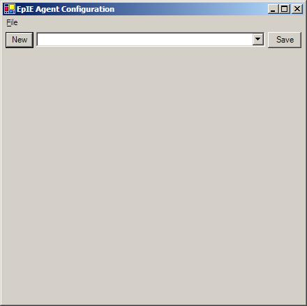
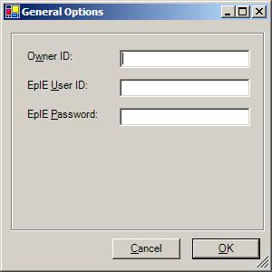
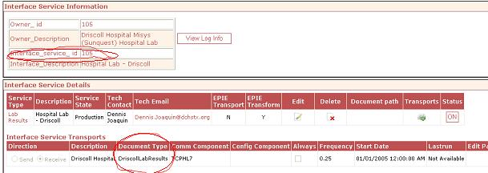

Additional Instruction
| Solution: |
EpIEAgent allows EHR interface partners to upload data intended for import into the EncounterPRO database or download data sent from an EncounterPRO database for a mutual customer without working directly with the EpIEGateway SOAP service. It resides on the interface partner's network and communicates with the EpIEGateway SOAP service at EHR headquarters. EpIEAgent is intended for use on the Microsoft Windows platform, but it is possible to run EpIEAgent in a Unix/Linux environment using the Mono framework. However, EHR will provide no support for running EpIEAgent on Mono. The latest version of EPIE Agent is found in EHR FTP site under "EP_Upgrades[Production or Beta]EPIE Agent". After EpIEAgent is installed, it must be configured. This can be done either by running the "Configure Feeds" shortcut created in the EpIEAgent program group, or by running the EpIEAgent.exe executable with the -c argument from the command line. The configuration screen looks like this.

 Each path by which messages travel to or from the interface partner is called a "feed" in EpIEAgent. There are currently two types of feeds supported: File and HL7 Socket. To create a new feed, click the "New" button on the main configuration screen. Enabled - Determines whether this feed operates when EpIEAgent runs. Upload - Determines whether this feed will upload data from the interface partner to EpIEGateway Download - Determines whether this feed will download data from the EpIEGateway to the interface partner Description - This description is displayed in the dropdown menu of available feeds and is also included in any error message descriptions. This field is required. AddresseeId - This is the Interface Service ID of the interface partner and this is found by looking up in CMA under the partner->interface service page. This field is required. CustomerId - This is an identifier the customer to send data to or receive data from. For uploading, it can be an identifier defined by the interface partner or the Customer ID defined by JMJ. For downloading, the JMJ-defined Customer ID must be used. This field is required. CustomerId is a JMJ AddresseeId - If the CustomerId used is the ID defined by JMJ, check this box so that EHR's integration engine knows that no customer identifier mapping is necessary. This field is required. DocumentType - The type of document consumed by or sent by the interface partner. This value is found in CMA by looking up under the partner -> Interface Service. This field is required Class - This determines the type of feed to use. The options are FileWorker and HL7SocketWorker. This field is required.
Once a Class is selected, more options specific to that type of feed will appear.
Getting Interface Service ID & Document Type The screen below shows how to look up the document type and service id in CMA.
 |
|||||||||||||||||||||
| Details: | ||||||||||||||||||||||
| Symptoms: |
| ID: 040827522180232 | Last Modified: 10/01/2008 10:18:00 PM |